After having seen people build miniature houses online, my interest in making one myself grew over time. In august 2018, I managed to get together the materials and spend a lot of time on creating this miniature house myself. All components are extremely small, and consist mainly of small parts of wood, metal, fabric, paper and electric components (for the lighting).
All parts are assembled with great precision and patience, for example a mini-whisk from an iron bar and a sofa with 4 different fabrics (wood, padding, protection, leather / fabric on the outside and pads with filling). To finish off, a small music box is installed in the kitchen and lighting via electrical wires. This project took me around 40 hours.
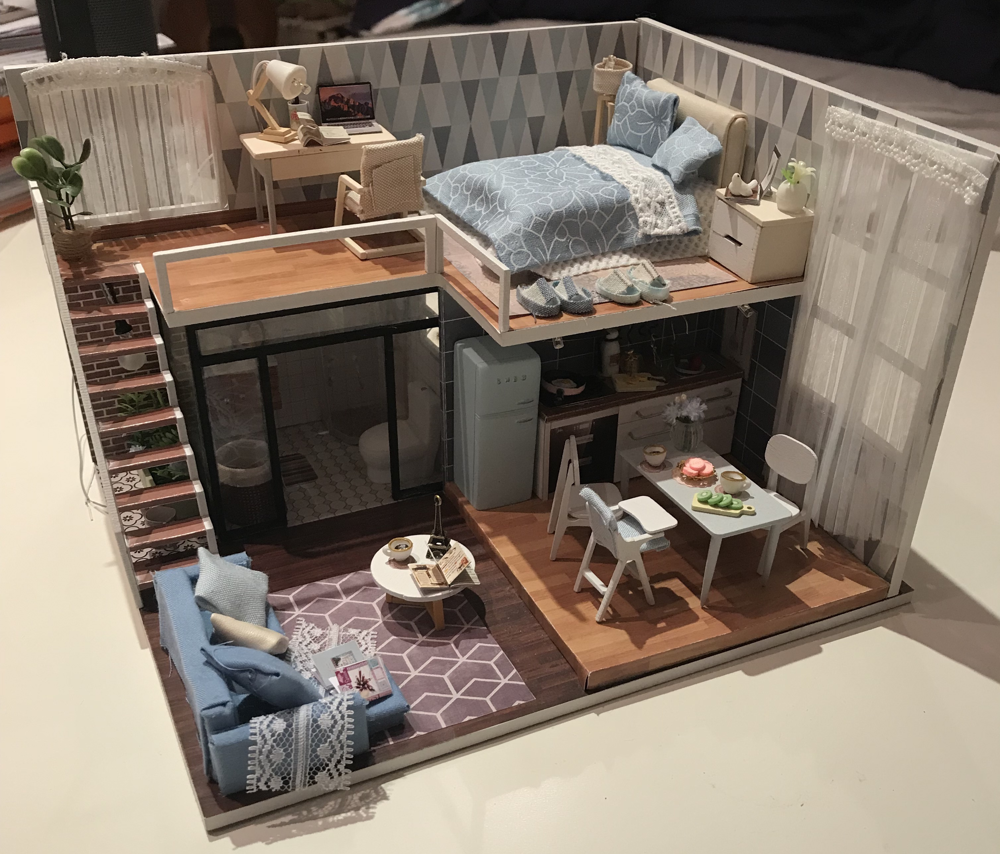
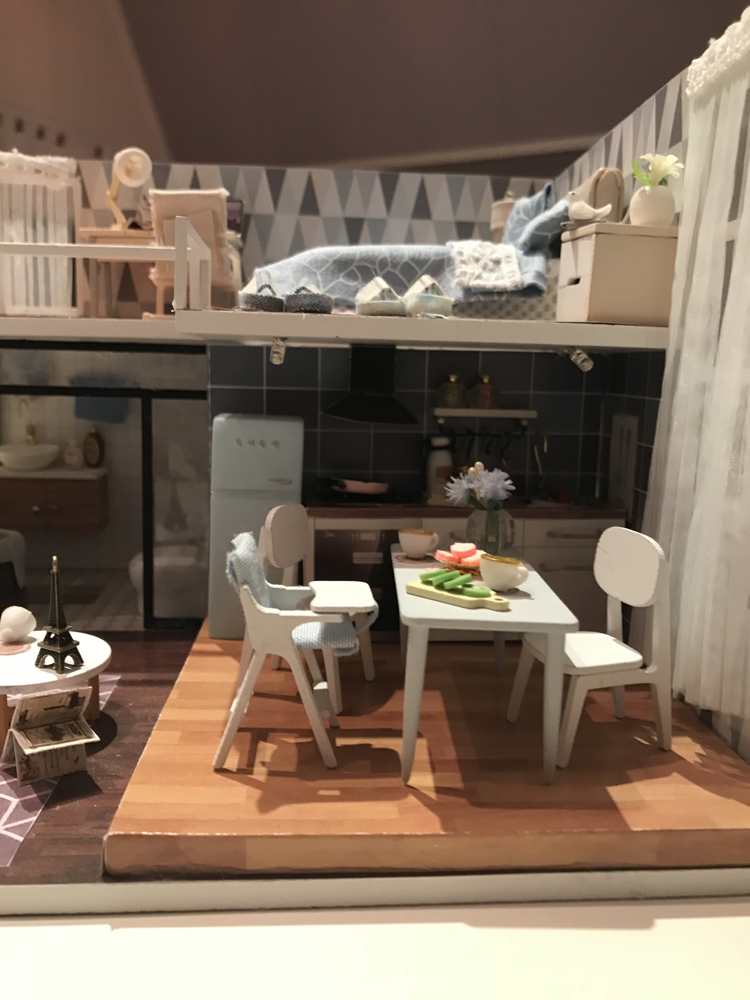
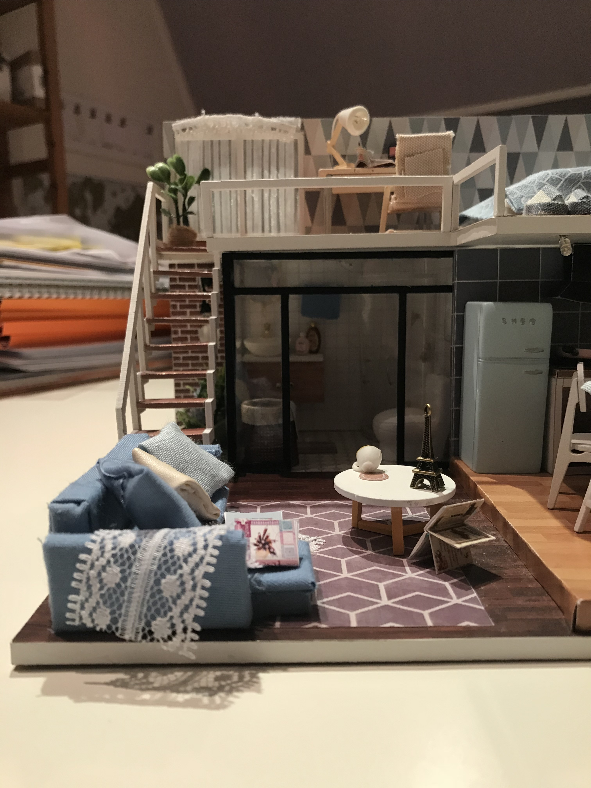
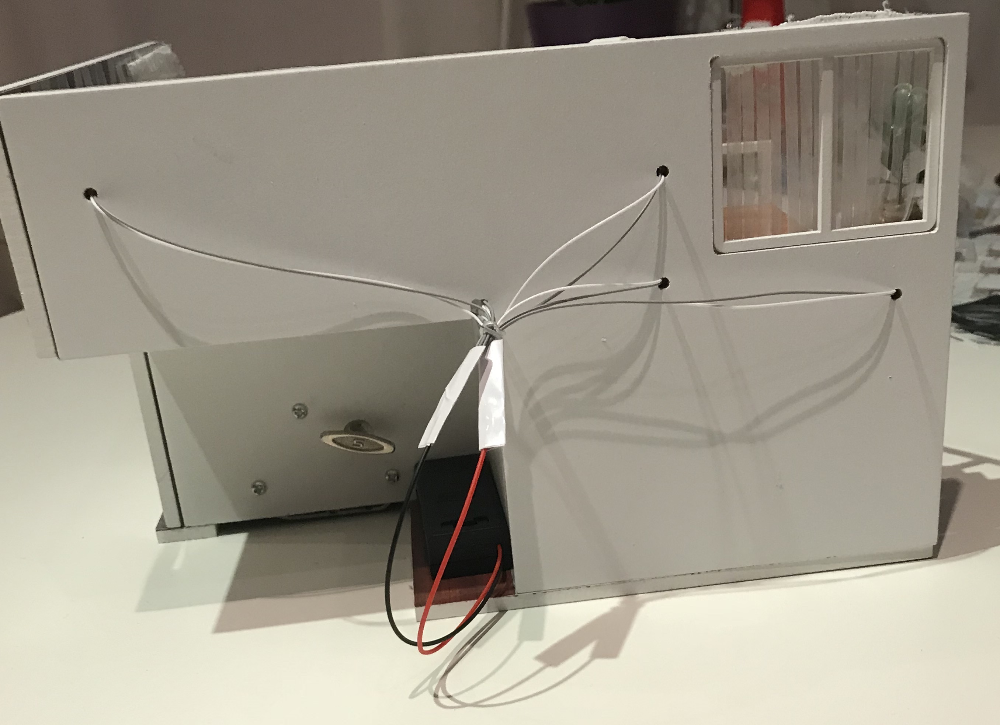
Date: August 2018
Purpose: Personal interest
Category: Miniature work
Building a drone
Electronics
As a final project in high school, I chose to make a drone and test the propellor efficiency, together with two other students. The project was part of the departments of informatics and physics, with as research question: “What is the influence of different propellers on the efficiency of a drone?”
To start the project, an online fundraiser was held where around 300 euros were gathered. With this money the drone could be made, including different propellors with which the experiment could be conducted. The drone with a heavy weight was put on a weighting scale, whereafter we tried to fly the drone as high as possible, hereby lifting the weight. This way we could see what kind of propellor had the biggest strength.
The project was conducted over a time span of 7 months, and received an 81% grade.
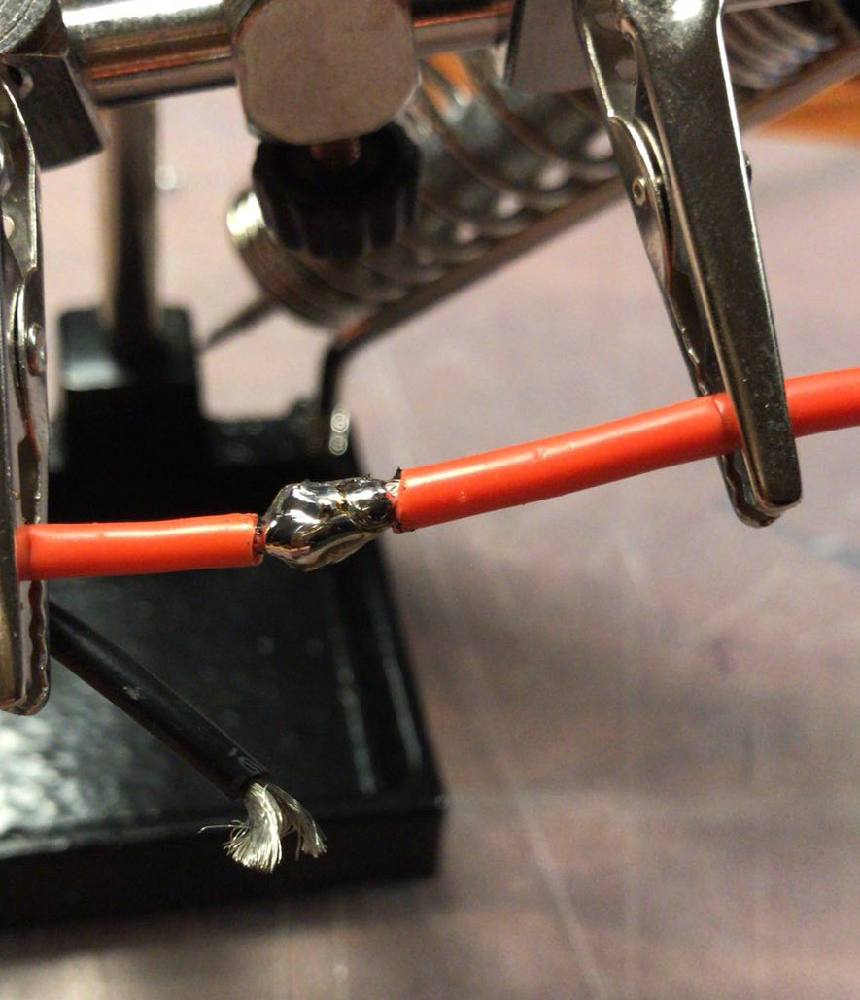
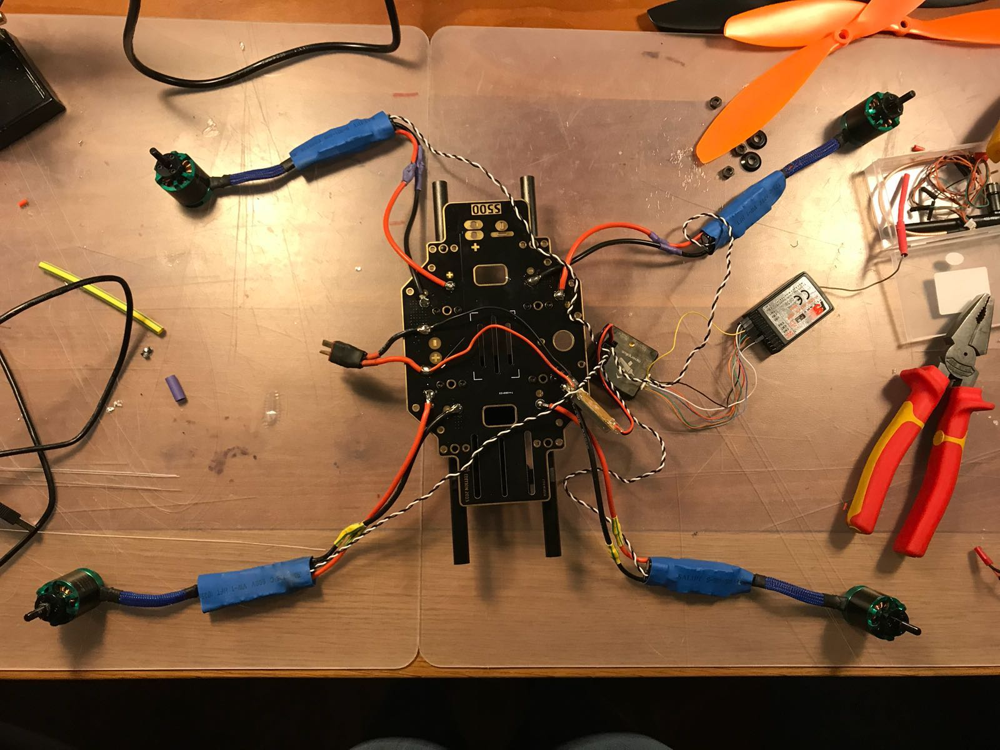
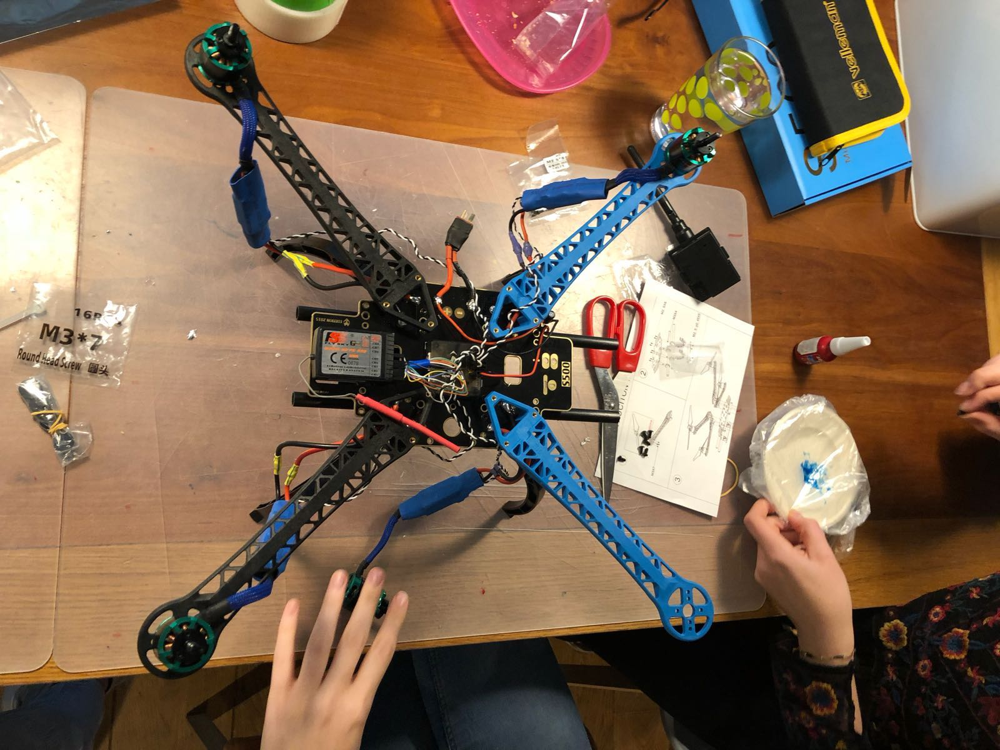
Date: February 2018
Purpose: Final project high school
Category: Electronics
Video editing
Aftermovies
In the end of 2011, I started experiencing with video editing. Most of the videos I have made are after movies, such as schooltrips or holidays (africa aftermovie) with the family. The videos are mainly made in iMovie, with some exceptions of Adobe Aftereffects. My YouTube channel including the videos can be found here.
Date: November 2011 - ongoing
Purpose: School projects and personal interest
Category: Video editing
Photoshop
Magazine covers
In my second year of high school I took the course photoshop. In this course we learned the basics of photo shopping, such as changing light and changing backgrounds.
We started off with cutting people out of pictures and putting them in a new background. Secondly we choose a few pictures and made them look good together by changing light and such. Finally we had to do some project, such as making magazine covers and comics. We practiced a lot with photoshop and I would say I’m compatible with it. Nowadays I mostly use it to make posters for papers.
Date: April 2014
Purpose: High school project
Category: Photoshop
Woodwork
Adirondack chair
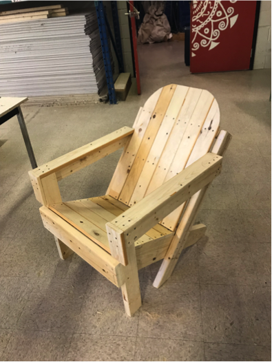
During the time at my high school in Canada, I took the course ‘skill trades’, which is basically building stuff with wood and metal. In this course we had to make our own project with wood, and I decided to make an adirondack chair together with another Canadian girl. An adirondack chair is a typical Canadian chair with the back of the chair on an angle.
To start we made a sketch of how our chair had to be, whereafter we started gathering the pieces of wood. There were only standard lengths of lumber, such as 2 by 12 feet. We had to make it smaller with a jigsaw, with which we also made pieces at a good angle. After that we put all the pieces together with a drill and electronic screwdriver. The course gave me hands-on experience of working with wood and metal tools, such as a electric screwdriver and drill, jigsaw, spirit level and clamps.

 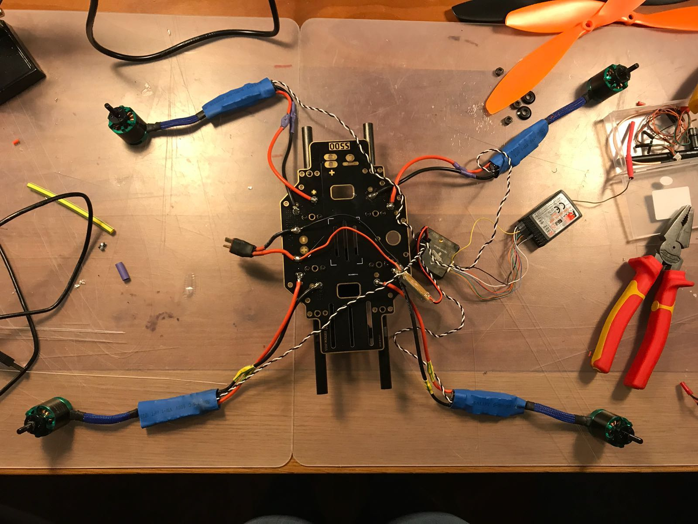
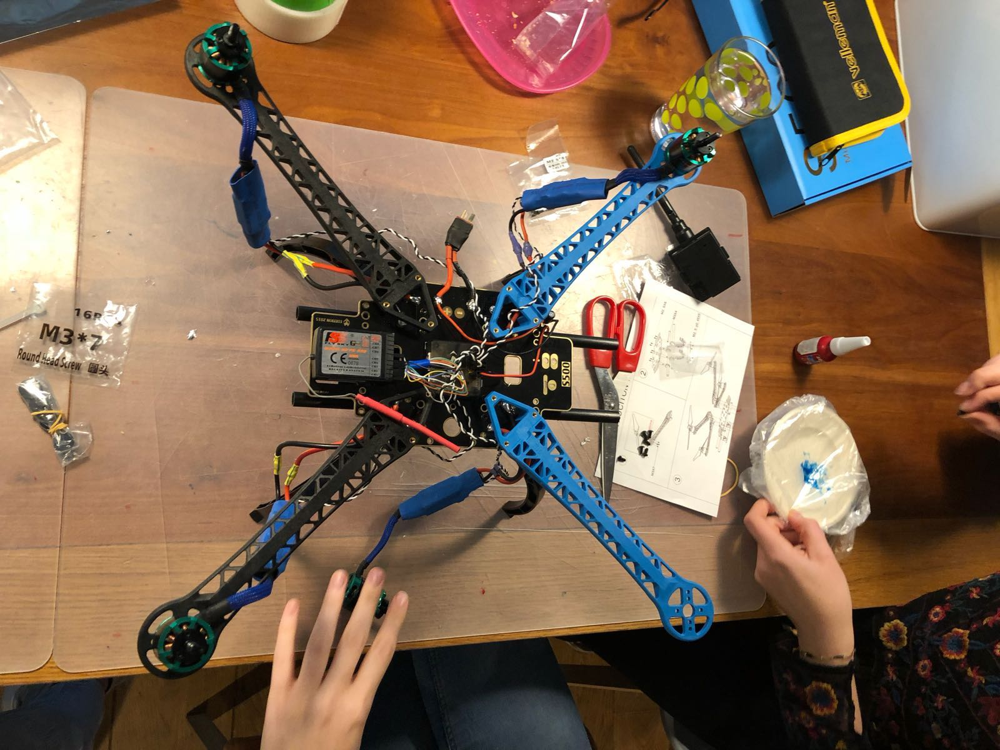
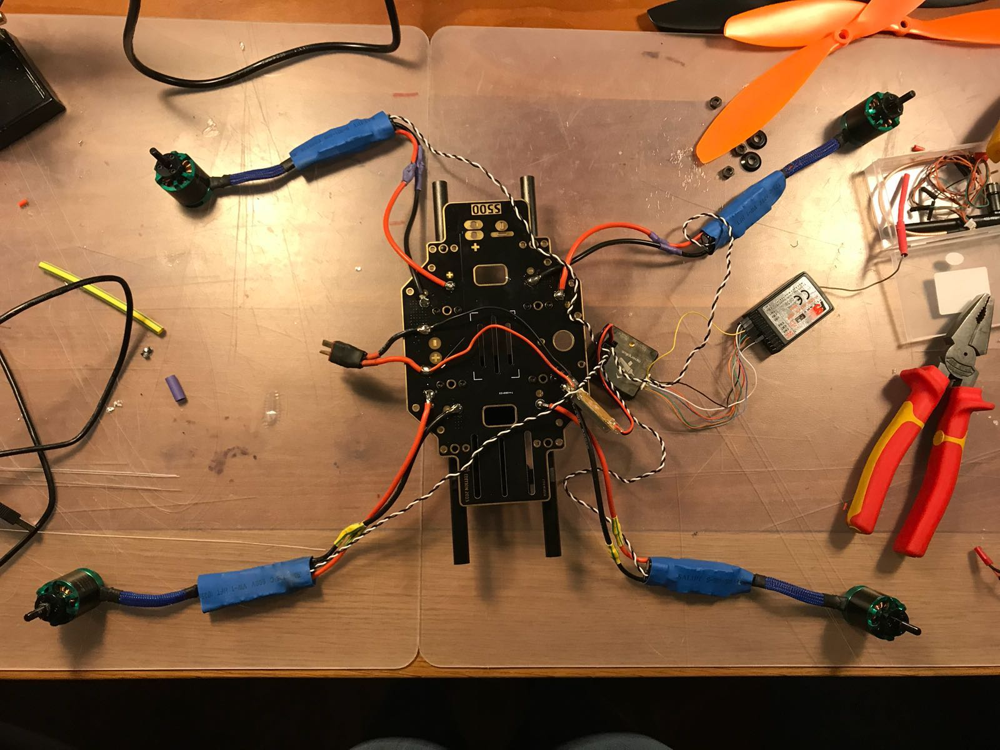
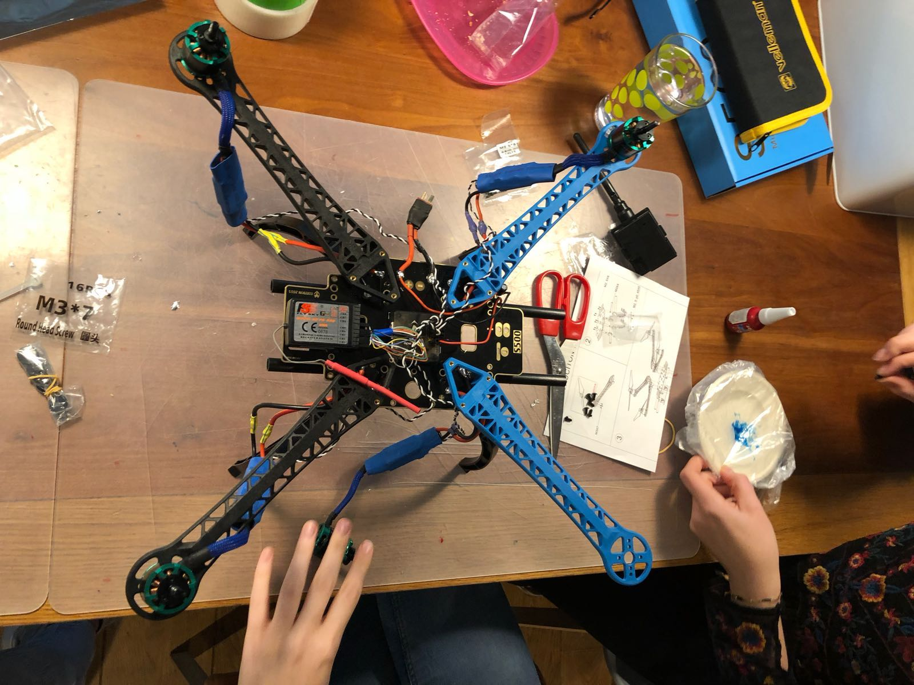